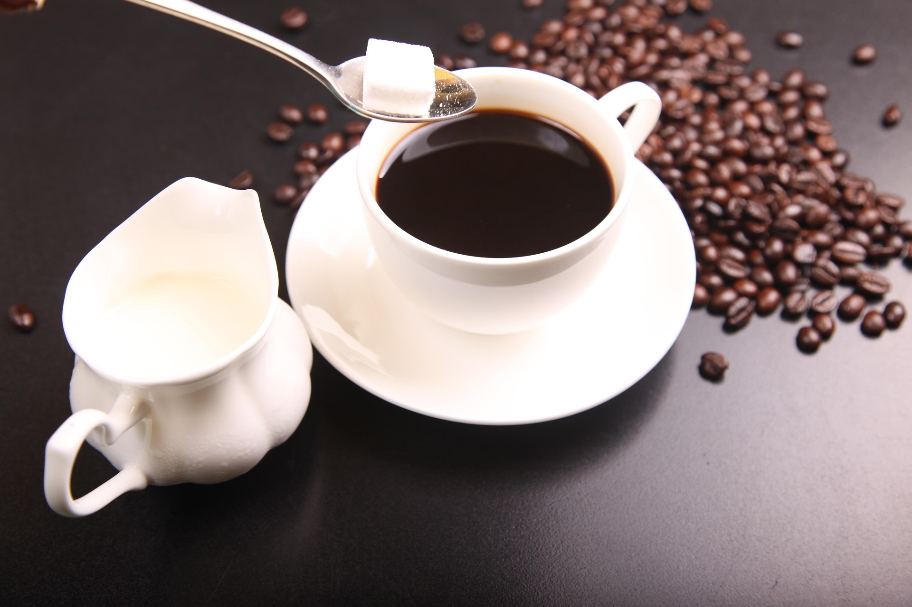
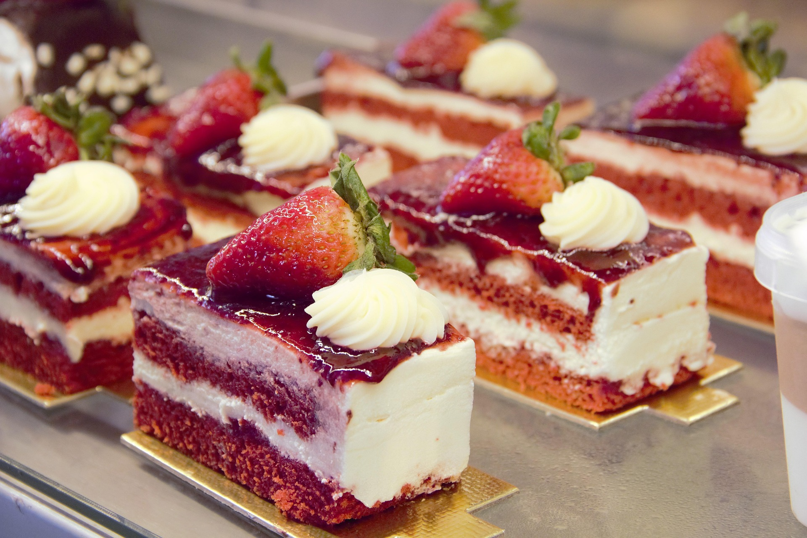

The Art of Perfect Coffee Brewing
Discover the secrets behind brewing the perfect cup of coffee. From selecting the right beans to mastering water temperature and timing, our head barista shares insider tips that will transform your daily coffee ritual. Learn about different brewing methods, grind sizes, and how to bring out the unique flavors in every bean. Whether you're a coffee novice or an enthusiast, these techniques will elevate your coffee experience to new heights.

Seasonal Menu Spotlight: Autumn Flavors
As the leaves change colors, so does our menu! Introducing our new autumn collection featuring pumpkin spice lattes, cinnamon apple pastries, and warming spiced teas. Our pastry chef has crafted these seasonal delights using locally sourced ingredients and traditional recipes with a modern twist. From our signature maple pecan scones to the rich and creamy butterscotch latte, each item captures the essence of fall in every bite and sip.
Latte Art Masterclass with Our Barista
Watch our expert barista create beautiful latte art patterns step by step. In this 8-minute tutorial, you'll learn the fundamentals of milk steaming, proper pouring techniques, and how to create classic designs like hearts, leaves, and rosettes. Perfect for aspiring baristas or coffee lovers who want to impress their friends at home.
Behind the Scenes: A Day at The Daily Grind
Take a peek behind the counter and see what goes into creating the perfect cafe experience. From our early morning prep work to the bustling lunch rush, discover the passion and dedication of our team. See how we source our beans, prepare fresh pastries daily, and create the warm, welcoming atmosphere that makes The Daily Grind feel like home.